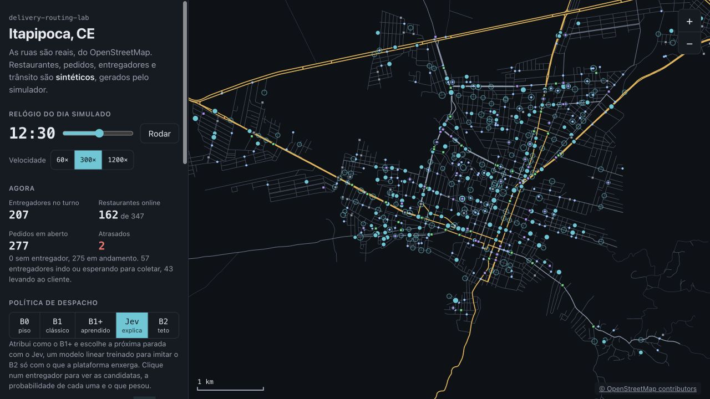

01 / CIDADE
Ruas reais
OpenStreetMap, grafo conectado e caminhos mínimos pelo tempo livre das vias.
Engenharia de ML · Simulação · Avaliação
Quanto vale aprender o tempo de preparo de um pedido? E acertar a próxima parada de um planejador melhora a frota? Um laboratório com baselines, modelos próprios e um mapa para examinar as decisões.
Replay sintético do dia 101, com cinco políticas de despacho. A primeira abertura do mapa carrega cerca de 17 MB; aguarde os dados antes de explorar.
Experimento com dados operacionais sintéticos. As ruas vêm do OpenStreetMap. Restaurantes, pedidos, entregadores, trânsito e preparo são gerados pelo simulador. Os resultados abaixo não medem uma operação real.

A comparação mantém cidade, demanda, turnos e mochila de até três pedidos. Muda a política de despacho e a informação que ela pode usar.
| Política | Como decide | No prazo |
|---|---|---|
| B0 | Entregador e próxima parada mais próximos. | 78,6% |
| B1 | Inserção e 2-opt; tempo livre das vias e preparo fixo. | 80,6% |
| B1+ | O planejador B1 com preparo e ETA aprendidos. | 91,2% |
| Jev linear | Atribuição do B1+; próxima parada escolhida pelo modelo. | 91,3% |
| B2 | Planejador com preparo e trânsito verdadeiros do simulador. | 93,8% |
Médias entre os dias de teste 101 a 120; 400 entregadores, semente 7. Por política: 106.401 pedidos, 105.511 entregues e 890 sem entrega (0,84%). Pontualidade considera os entregues. As hastes são desvios entre dias, não intervalos de confiança. B2 é uma referência privilegiada, não um ótimo global.


Achado principal
Uma previsão melhor de preparo teve mais valor que sofisticar a próxima parada. O B1+ melhora cerca de 10,6 pontos percentuais sobre o B1. Isso orienta onde investir no modelo; a importância relativa do ETA pode mudar com outro trânsito ou outra demanda.
O Jev aprende a escolher a próxima parada imitando decisões do B2, usando apenas as informações disponíveis à plataforma. A avaliação compara tanto essa imitação offline quanto a política dirigindo seus próprios estados na simulação.

Decisão técnica
Manter o linear como a versão explicável do Jev. Ele apresenta desempenho operacional próximo ao B1+ e permite decompor exatamente sua pontuação por fator. A rede pequena aumenta a complexidade sem demonstrar vantagem operacional neste experimento.
A explicação mostra o que pesou na pontuação do modelo. Não prova o que causaria um atraso no mundo real. Probabilidade de escolha também não significa probabilidade de entregar no prazo.
O replay mostra o relógio do dia, pedidos em aberto e o trecho percorrido por cada entregador. Ao selecionar um entregador na política Jev, aparecem as candidatas da decisão, suas probabilidades e a contribuição dos fatores.
Explore o mapa interativo: avance o relógio, alterne entre B0, B1, B1+, Jev e B2 e clique nos entregadores. As cinco políticas reproduzem o mesmo dia sintético, 101; as médias de 20 dias estão nos gráficos desta página.


As imagens são capturas da aplicação em execução. O mapa desenha arquivos locais de ruas e replay em canvas. Veja as condições e os passos para reproduzir as capturas.
O simulador e o avaliador ficam separados da visualização. Assim, o mesmo dia pode ser executado com políticas diferentes e inspecionado depois no navegador.
01 / CIDADE
OpenStreetMap, grafo conectado e caminhos mínimos pelo tempo livre das vias.
02 / MUNDO
Semente fixa gera restaurantes, pedidos, turnos, preparo e trânsito escondidos.
03 / POLÍTICA
Baselines, modelos de preparo e ETA, escolha de próxima parada pelo Jev.
04 / AVALIAÇÃO
Resultados por dia, gráficos e JSON estático para o mapa React.
Rede, inicialização, Adam e laço de treino implementados no projeto. PyTorch fornece tensores e autograd; o cálculo de inferência usa NumPy. Os imports atuais ainda exigem instalar o extra train para executar as políticas aprendidas.
A política responde assign e next_stop. O Jev devolve probabilidades, confiança, margem e contribuições. A interface lê cidade, mundo e replays em JSON; o mapa não participa da decisão.
O próximo teste útil é desafiar as suposições. Variar demanda, trânsito e ruído de preparo pode mostrar quando cada política deixa de funcionar. Validar em outra distribuição é necessário antes de extrapolar os números.
O README contém o preparo do ambiente, a geração do grafo e dos cinco replays e os comandos para abrir o mapa. Os modelos treinados são versionados; a demonstração usa um snapshot congelado, com dados e recorte OSM disponíveis para download.
# Na raiz do repositório: recriar gráficos do snapshot versionado
uv run --with matplotlib python scripts/plot_results.py
# Fonte dos números e protocolo detalhado
docs/resultados.json
docs/metodologia.mdRecriar os gráficos a partir do snapshot não refaz o experimento. A coleta completa exige o ambiente e os dados preparados conforme o README; o script documenta a opção --collect. Os gráficos não fazem chamadas a modelos pagos.